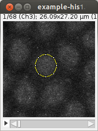
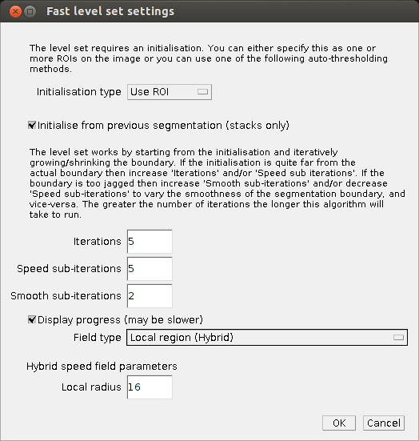
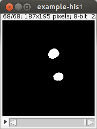
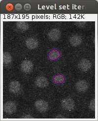

FastLevelSet ImageJ plugin
Note this plugin is incomplete.




Installation
- Copy FastLevelSet_Plugin.jar into a subdirectory of your ImageJ plugins directory.
- If ImageJ is already running then restart (or choose ).
Example segmentation
- Open example-his1.tif. This is a time-lapse image stack.
- Select a circular region of interest (ROI) as shown in the figure.
- Open in the plugins menu
- In the dialog:
- Keep , this means the ROI created in the previous step will be used for the initialisation. The other values values are the built-in ImageJ auto-thresholder methods.
- Change to . This controls how much the segmentation can evolve from the initialisation.
- Change to . works well when the foreground and background intensities are fairly constant, however for this example we only want to segment one of the objects.
- Click on .
- Two new windows will appear. One window shows the step-by-step evolution of the level-set, the other shows the final segmentation of each frame.